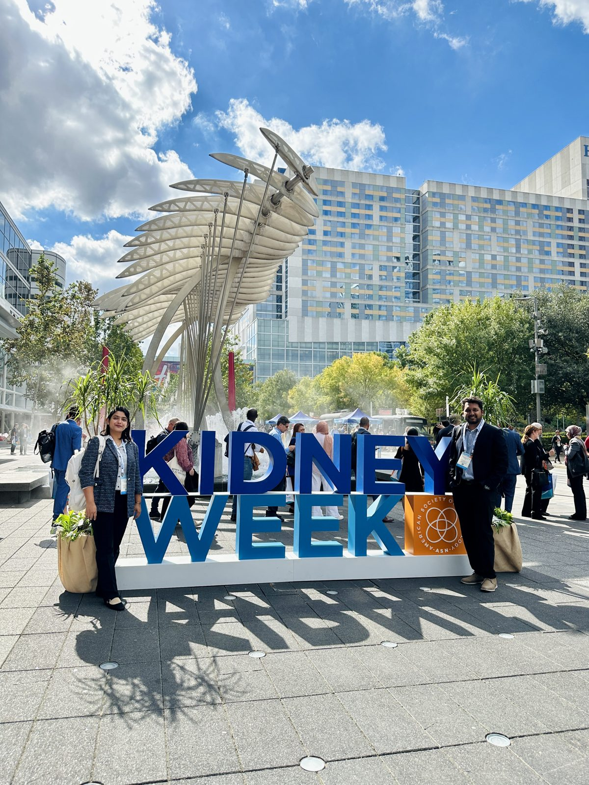
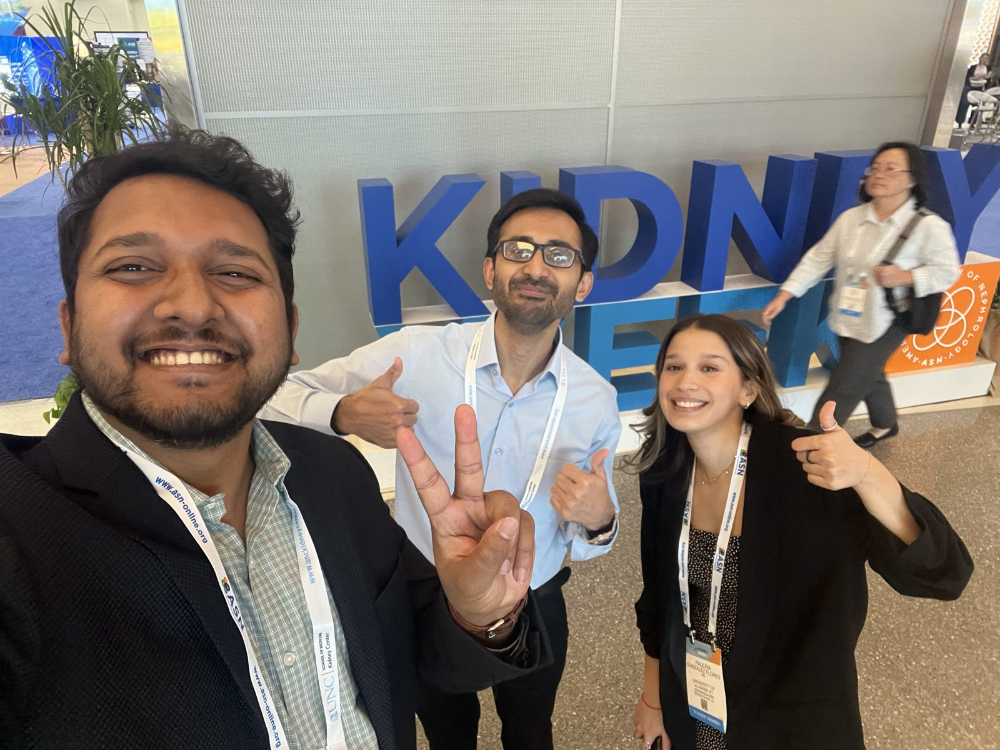
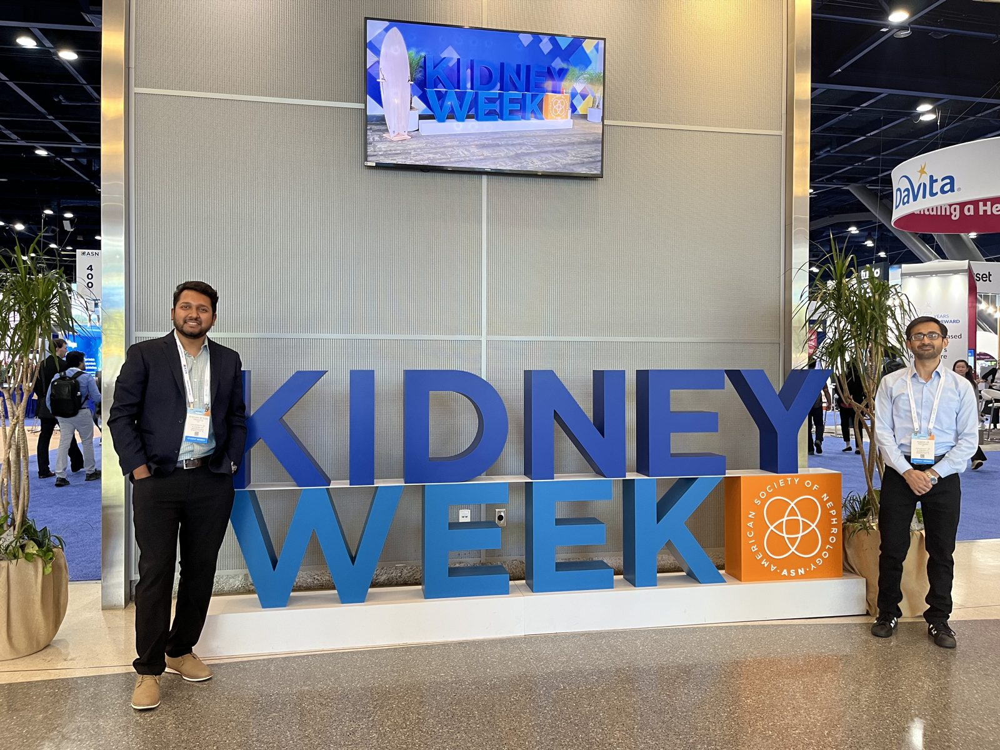
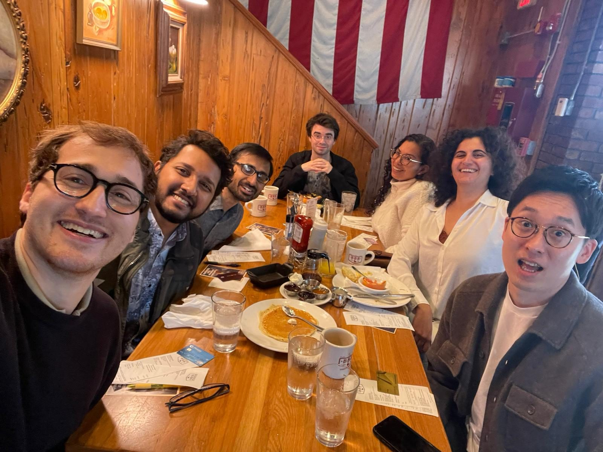
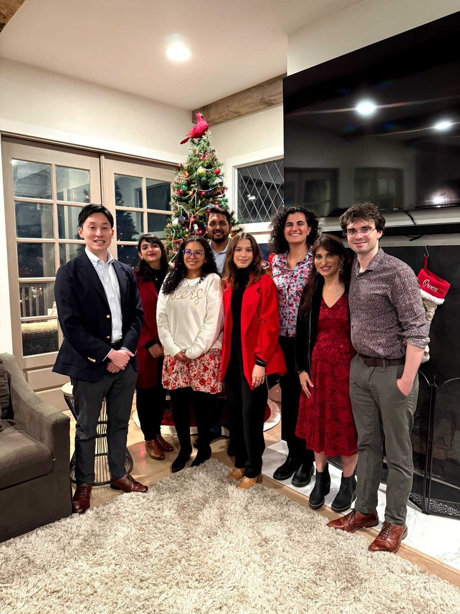
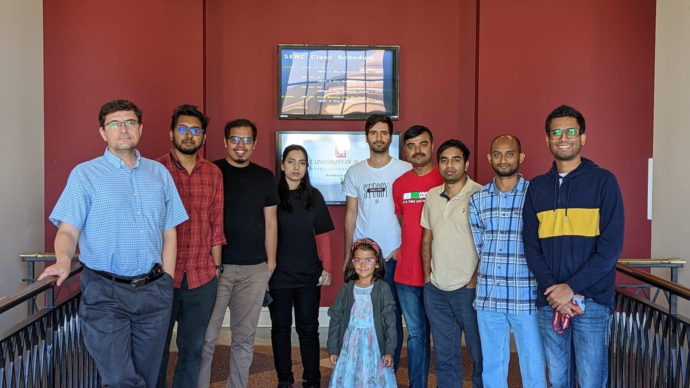
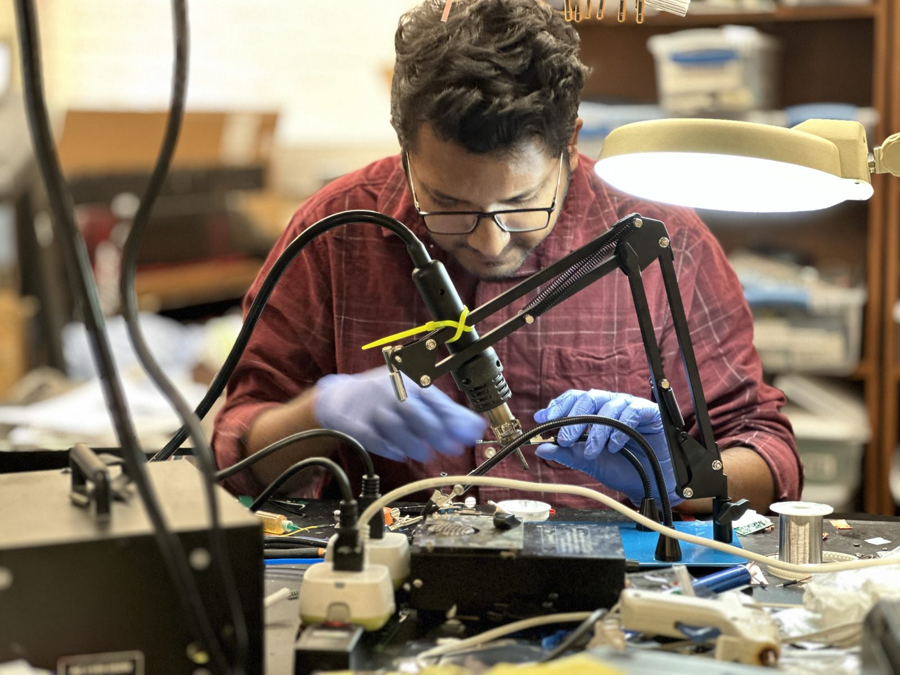
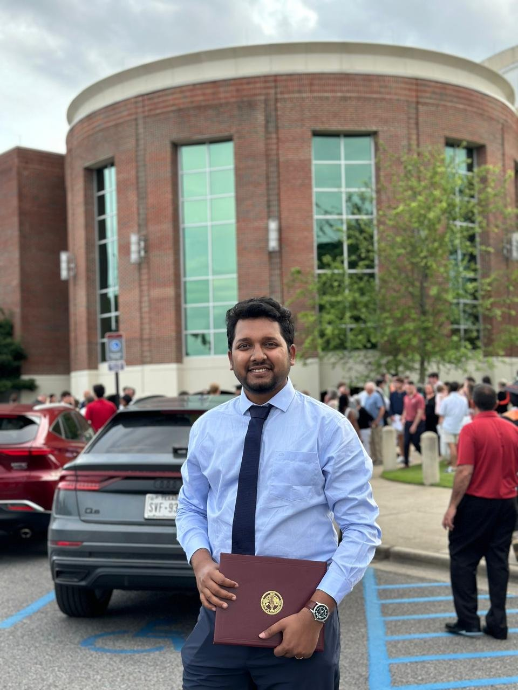
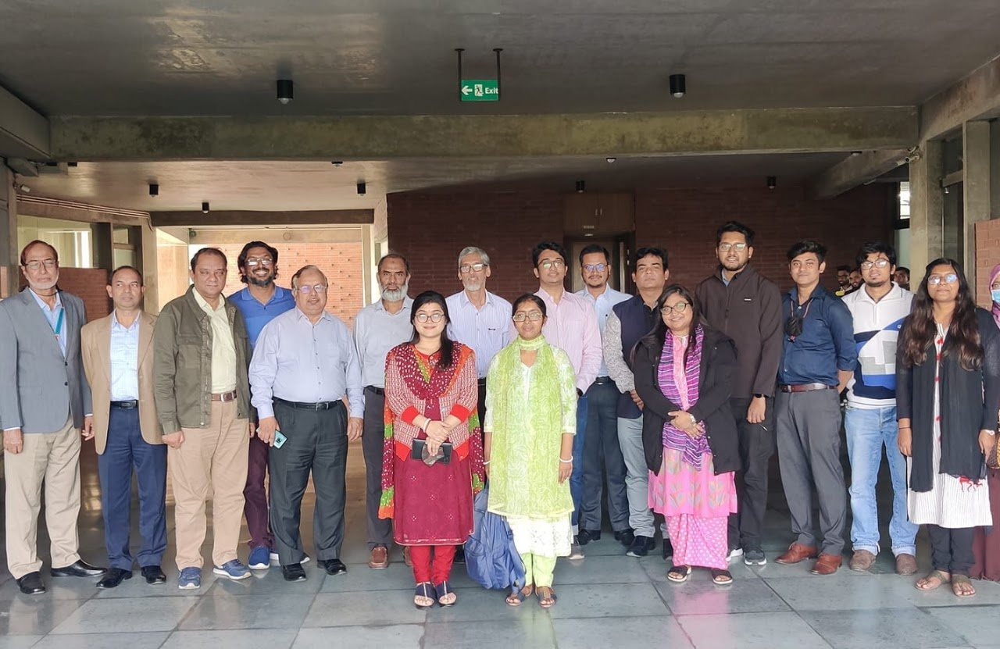

Gallery
Conferences, presentations, and the people and hardware behind the work. Click any photo to enlarge.
ATTIS 2026, Birmingham
Flash talk and poster: Do CRRT Machine Signals Add Prognostic Value? 2nd Place Poster Award, with video.

ASN Kidney Week 2025, Houston
Co-author on three abstracts, including an oral presentation from our group.



ATTIS 2025, Birmingham
Flash talk and poster: Enhancing Prognostic Accuracy in AKI, a systematic data-quality assurance framework for CRRT machine data.


UAB — Chen & Neyra labs
Biomedical Informatics and Data Science, and the Division of Nephrology.


CLAWS Lab, The University of Alabama
Computer Laboratory of Ambient and Wearable Systems (Prof. Edward Sazonov), 2022 – 2024. Building the FRIENDS vaping monitor.





AIMS Lab, United International University
Advanced Intelligent Multidisciplinary Systems Lab (Prof. Khondaker A. Mamun), Dhaka, 2020 – 2022.


